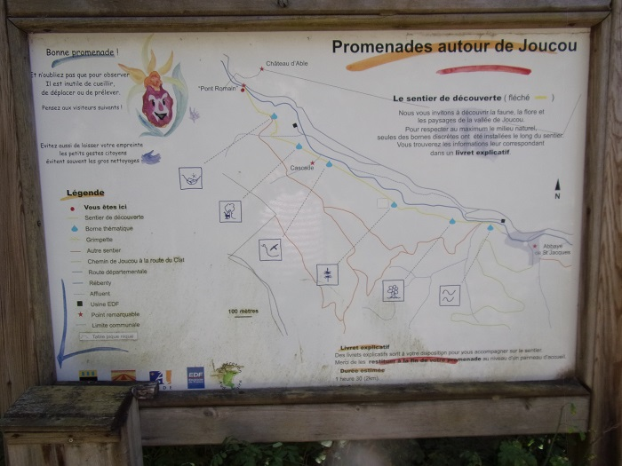

Le défilé de Joucou est une gorges étroite de 500 m environ dans laquelle un passage a été creusé en 1867 sur la rive gauche pour élargir la route précédente qui passait rive droite. Ce choix a permis de réaliser un exploit technologique par le percement de 3 tunnels et autres, sans toucher au pont romain qui se trouve en amont des gorges et permettait initialement de traverser le Rébenty avant cette difficulté. Je n'ai pour l'instant pas fait la randonnée Joucou / pont romain pour voir par moi-même la nécessité de forcer ce passage par la roche, mais sur le plan en tout cas les 2 choix ne me semblent pas guère différents en kilomètre, peut-être en dénivelé ?
Entrée des gorges
Petite usine Hydroélectrique, la prise d'eau est à la sortie des gorges

Vers le premier des 3 tunnels


Premier tunnel

Plaque commémorative sur le premier tunnel, "Ce chemin a été construit en 1867 sous l'administration de M. MAGNIEN Préfet de l'Aude et sous la direction de MM. MALRIC agent-voyer en chef de l'Aude, Louis FAGES agent-voyer de l'arrondissement de Limoux et VAQUIER agent-voyer conducteur. CAISSAC entrepreneur

Vers le deuxième tunnel

Avant le deuxième tunnel, falaise trouée par ce tunnel


Les deuxième et troisième tunnels

Le troisième tunnel
Plaque commémorative du nettoyage du défilé par le club spéléo de l'Aude en 2002,
placée entre les 2 et 3ème tunnel

falaise du troisième tunnel

Troisième tunnel


Après le troisième tunnel
"Pont romain" vu de dessus à la sortie du défilé, passage de la route avant le percement du défilé

Passage interdit sur le "Pont romain", un des côtés s'étant écroulé
Plan des chemins de randonnées de l'autre côté du pont romain


les ruines du chateau d'Able, surveillant le pont depuis le haut de la rive gauche


Vue du troisième tunnel depuis la rive droite du Rébenty

Pont romain vue du Rébenty
Barrage sur le Rébenty pour prise d'eau pour l'usine en entrée des gorges

Au delà du barrage sur le Rébenty

Entrée des gorges


Route avant le premier tunnel

premier et deuxième tunnels


sortie du deuxième tunnel


vers le troisième tunnel